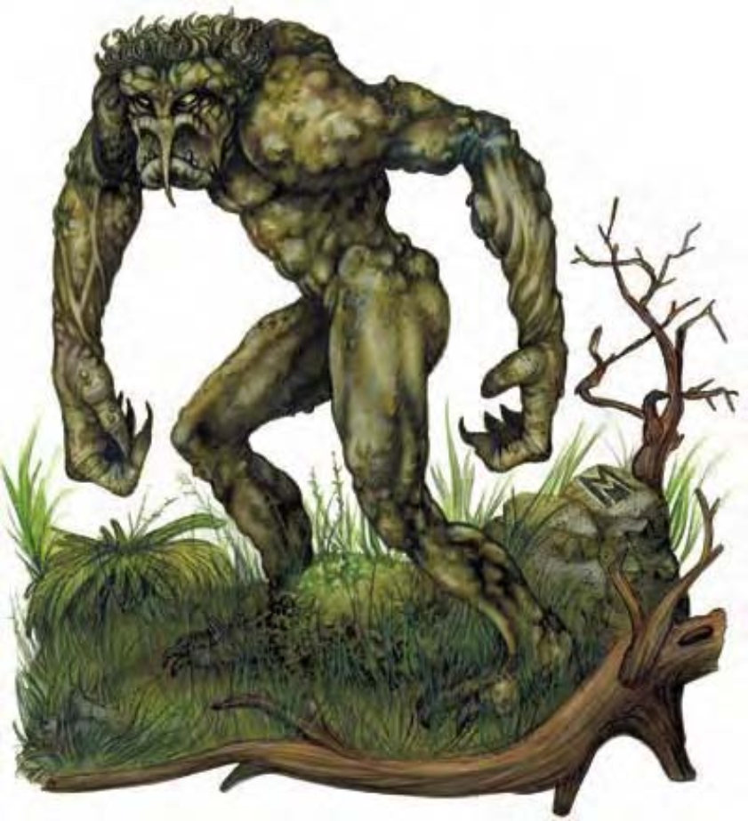

巨魔是硕大的双足生物，高度差不多是人类的一倍半，但身型非常瘦长，手臂和双腿扭曲而且丑陋，足部有三个巨大的脚趾，手掌大而有力，指端为利爪。巨魔皮肤厚重有弹性，毛发浓密纠结，而且似乎有生命一样不断蠕动。
巨魔是恐怖的肉食性生物，能够在任何气候条件下生存，从极地荒原到热带丛林都可以。大多数生物都会尽可能避开他们，因为巨魔不知恐惧为何物，饥饿的时候更会疯狂攻击。
巨魔的食欲极为旺盛，无论是虫子、熊或人类都一样可以吃下肚。他们通常会在聚落附近筑巢，捕猎居民为食，直到吃光为止。
巨魔可以直立行走，但身体前倾，肩膀下垂。他们走路的样子左摇右晃，奔跑的时候双手会垂到地面，拖曳而行。然而，千万不要被这种笨拙模样给骗了，他们的动作其实非常敏捷。
成年巨魔身高可达9英尺，重500磅，雌性体型比雄性略大。皮肤通常是草绿色、绿色夹杂灰色斑纹或黄绿色，毛发通常是墨绿色或铁灰色。
巨魔通晓巨人语。
巨魔完全不怕死，战斗时会毫不保留地猛烈攻击身边最近的敌人。即使被火所伤，他们也会设法绕过火焰继续攻击。
撕扯 (特异)：如果巨魔的2次爪抓都命中同一个对手，就可抓住并撕裂对方身体，自动造成2d6+9点额外伤害。
再生 (特异)：火焰和强酸可以对巨魔造成正常伤害。若失去肢体或身体器官，3d6分钟后就会重新长出来。如果将断掉的肢体装在残肢的位置，立刻就可以接续。
水巨魔是具有水生亚种特性的巨魔，栖息在任何气候环境的水域中，基本行走速度20英尺，游泳速度40英尺。他们通常不会出现在陆地上，身体大部分必须浸在水中才有再生能力。
有些巨魔天性比同类还要狡诈诡谲，光是吃些当地居民并不够，非得享受追捕猎物的刺激才能满足。这群生物就被称为巨魔猎人，具有巡林客职业，专门猎杀捕食人类。
巨魔猎人会利用天生的灵敏嗅觉追踪宿敌，多半偏好在夜间猎食。
虽然能施展的数量不多，他们也会善用法术来保护自己，抵抗特定形态的能量或让敌人失去行动力。
一般已准备巡林客法术 (2；豁免检定DC=12+法术等级)：一级――"纠缠术"、"抵抗能量伤害"。
巨魔人物具有下列种族特性：
――+12力量、+4敏捷、+12体质、-4智力（最小3）、-2感知、-4魅力。
――大型、防御等级-1减值、攻击检定-1减值、"躲藏"检定-4减值、擒抱检定+4加值、举物及负重能力上限为中型人物的两倍。
――占据空间/可触距离：10英尺/10英尺。
――巨魔的基本行走速度为30英尺。
――黑暗视觉可达60英尺、昏暗视觉。
――种族生命骰：巨魔起始为6级巨人，生命骰6d8、基本攻击加值+4，强韧、反射与意志的基本豁免检定则分别是+5、+2及+2。
――种族技能：巨魔的巨人等级使他的技能点数成为9x (2+智力调整值，最小1)。他的本职技能聆听与侦察。
――种族专长：巨魔的巨人等级具有三个专长。
――+5天生防御加值。
――天生武器：爪抓 (1d6) 及啮咬 (1d6)。
――特殊攻击 (见前文)：撕扯，伤害值2d6+1.5倍力量调整值。
――特殊能力 (见前文)：再生5、灵敏嗅觉。
――母语：巨人语。额外语言：通用语、兽人语。
――适合职业：战士。
――等级修正值：+5。